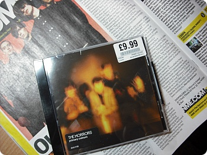
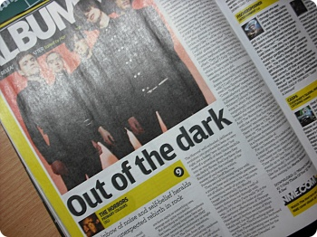
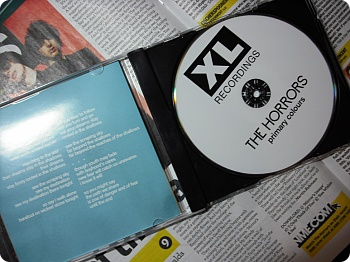
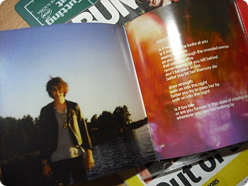
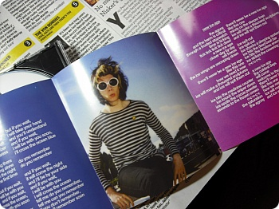
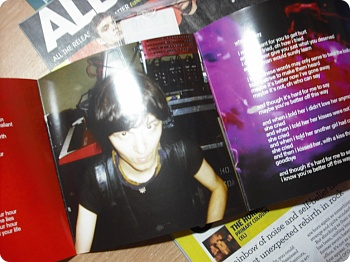

발매일날 득달같이 동네 HMV로 뛰가주는 센스
The Horrors - primary colours
락페의 계절이 다가옵니다~움헷헷헷
The Horrors - primary colours
락페의 계절이 다가옵니다~움헷헷헷

앨범리뷰 무려 9point 엄훠~
사실 요 리뷰나 평점이라는게 아무리 좋아도
자기가 싫으면 싫은거지만^^;;
또 있으면 찾아읽게되는게 사람 심리인지라 하핫
"A rainbow of noise and self-belief heralds the most unexpected rebirth in rock"
....이라고 써있군욤
사실 요 리뷰나 평점이라는게 아무리 좋아도
자기가 싫으면 싫은거지만^^;;
또 있으면 찾아읽게되는게 사람 심리인지라 하핫
"A rainbow of noise and self-belief heralds the most unexpected rebirth in rock"
....이라고 써있군욤

처음 케이스 열자마자
푸핫 하고 웃어버린게
뭡니까 아무리 인디라지만 이 빈티나는(영화로치믄 B급? ㅋㅋ) 디자인은
푸핫 하고 웃어버린게
뭡니까 아무리 인디라지만 이 빈티나는(영화로치믄 B급? ㅋㅋ) 디자인은

패리스가 어설프게환하게 웃고있어 ㅋㅋㅋ

이상한 표정의 조슈

스파이더 어쩔거야 이사진 ㅋㅋㅋㅋㅋㅋㅋㅋㅋ
저번 포스팅에서 적어놨듯
전체적으로 곡이 좀 진정된 느낌입니다.
저번 앨범보다 듣기편하군요
앞뒤 안가리고 휘둘러대는 포쓰는 많이 사라졌습니다
(....모르지 공연에서 패리스가 또 뭔 ㅈㄹ 를 할지는;; ㅋㅋㅋㅋ)
밴드 전 앨범느낌은 그대로 갖고있으면서도
많이 차분해졌어요 ^^***
(사실 제가 요래 길고 가는분들을 무척이나 좋아합니다////
그러니 뭔들 안이쁘겠.......←;;;;)
Track listing
1. Mirror's Image
2. Three Decades
3. Who Can Say
4. Do You Remember
5. New Ice Age
6. Scarlet Fields
7. I Only Think Of You
8. I Can't Control Myself
9. Primary Colours
10. Sea Within A Sea
처음 my space에서 들었던 Sea Within A Sea
가 우선 젤 맘에 드는군요
요즘같은 세상에 7분58초짜리 곡이라니
용감하다 호러즈 ㅋㅋㅋㅋ
Mirror's Image도 추천+_+
으으/////6월까지 언제기다려 ㅜㅜ 공연가고싶어용////